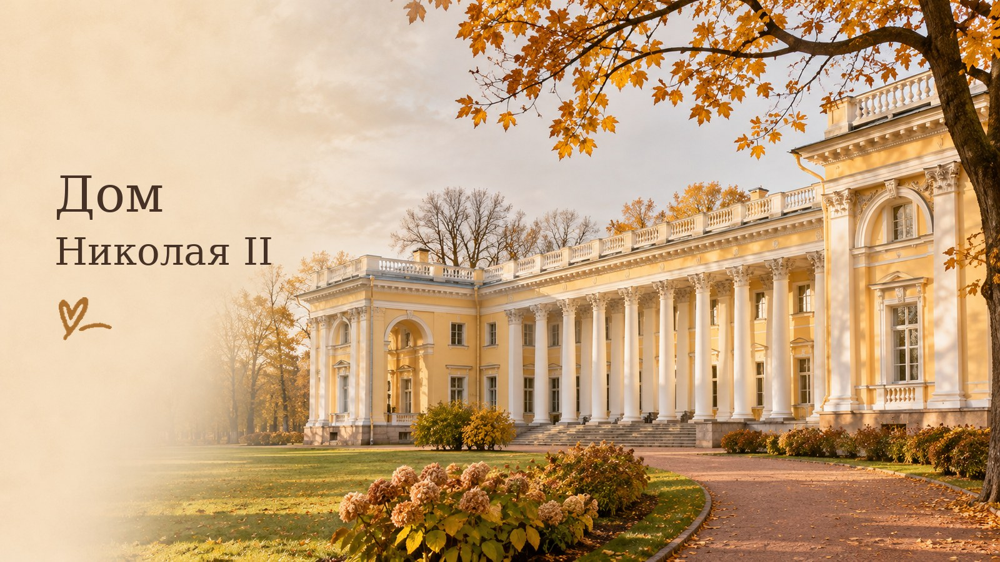
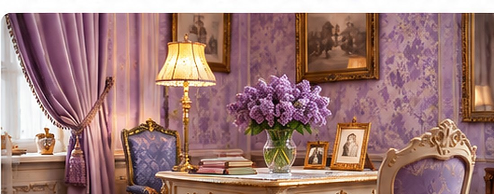
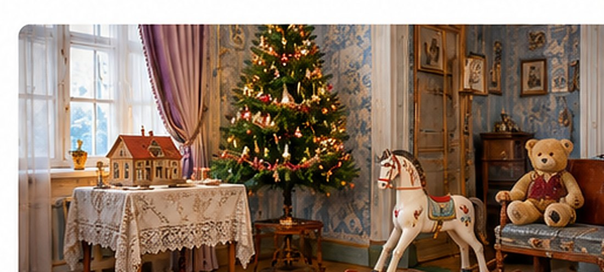

Почему Николай II выбрал Александровский дворец семейным домом

В Александровском дворце Николай II не только принимал министров. Здесь он собирался с семьёй за вечерним чаем, а этажом выше росли пятеро детей. И именно отсюда в 1917 году они уехали в ссылку.
У этого дома удивительная история: он был связан с императором с первых дней жизни, а со временем стал местом, где семейные привычки соседствовали с государственными решениями. Почему Николай предпочёл его другим резиденциям?
Дом, с которого всё началось
Николай родился в Александровском дворце в 1868 году. Ещё задолго до этого здание построили по распоряжению Екатерины II для её внука, будущего Александра I. За величественной колоннадой скрывалось место, в котором сменялись поколения одной династии.
В ноябре 1894 года, уже после вступления на престол и свадьбы с Александрой Фёдоровной, Николай вернулся сюда с молодой женой. В дневнике он называл радостью возможность «жить вдвоём» в Царском Селе.
Устроить собственное пространство решили не в парадных залах. Для супругов переоборудовали личные комнаты во дворцовом флигеле: со спальней, кабинетами и гостиными. Так у огромного здания появилась очень домашняя для его владельцев половина.
Сиреневый кабинет, где собирались после завтрака

Самая неожиданная деталь скрывалась в комнатах императрицы. Роман Мельцер оформил её любимый Сиреневый кабинет в розовато-лиловых тонах: шёлк на стенах, светлая мебель, встроенные шкафы, вещи, выбранные по личному вкусу хозяйки.
Это был не выставочный зал, в котором нельзя ничего трогать. По сведениям музея «Царское Село», здесь супруги с детьми пили кофе после завтрака и собирались на вечерний чай. Александра Фёдоровна читала, работала, а по вечерам в кабинете бывала вся семья.
Среди домашних развлечений были настольные игры. Музей рассказывает даже об игре в «блошки», где маленькие фишки старались подбросить так, чтобы накрыть фишки соперника. Пожалуй, это удивляет сильнее любого золотого потолка.
По соседству с семьёй работало государство
Но считать Александровский дворец тихим убежищем от государственных дел было бы ошибкой. В рабочем кабинете Николай II принимал министров, выслушивал доклады и работал с бумагами.
Обстановка этого кабинета тоже была продумана. Деревянные панели и мебель изготовили из ореха, а библиотека насчитывала около 700 томов: книги по истории, военному делу, государственным вопросам и художественную литературу.
На личной половине императора находилась и необычная для того времени ванная комната с большим бассейном. Дворец имел современные удобства, но главным его отличием для семьи были не технические новинки, а привычный уклад.
С 1905 года Александровский дворец стал постоянной резиденцией Николая II. Здесь не только жили: сюда приезжали послы и чиновники, здесь проходили важные встречи. Жизнь за закрытыми дверями не могла быть полностью частной.
А наверху были детские комнаты

У Николая и Александры родились четыре дочери: Ольга, Татьяна, Мария и Анастасия. В 1904 году появился сын Алексей. Их комнаты располагались на втором этаже, над покоями родителей.
Сотрудники музея отмечают, что детские помещения были удобными, но без чрезмерной роскоши. Старшие девочки жили парами, а наследник имел отдельные комнаты. Там находились книги, игрушки и личные вещи.
Особое место занимало Рождество. Для детей украшали ёлку наверху, а на первом этаже готовили другие праздничные деревья. Праздник охватывал не только семью, но и дворцовое окружение.
В таких подробностях легче увидеть не только императорские титулы, но и обычное семейное расписание: завтрак, занятия, чтение и ожидание праздника. Хотя масштабы дома, конечно, были совсем не обычными.
Дом, из которого пришлось уехать
В марте 1917 года история этих комнат резко изменилась. После отречения Николая II семья оказалась в Александровском дворце под домашним арестом. Парк, где раньше можно было гулять свободно, стал частью ограниченного пространства.
1 августа 1917 года семью отправили из Царского Села в Тобольск. Так место, в котором Николай появился на свет и где росли его дети, стало последним домом семьи до ссылки.
Позднее интерьеры сильно пострадали, особенно в годы войны. Сегодня музей восстанавливает утраченные детали по архивным снимкам, документам и сохранившимся образцам. Это важное различие: перед посетителем не нетронутые комнаты 1917 года, а тщательно воссозданная историческая среда.
Наверное, поэтому интереснее всего смотреть здесь не только на колонны и парадные залы. За ними видна жизнь семьи, которая старалась устроить свой привычный дом в обстоятельствах, совсем не похожих на наши.
В «Красиво жить» мы начинаем рубрику «За дверями истории»: будем находить человеческие сюжеты за известными именами и проверять их по музейным и историческим источникам. Если такие истории вам близки, подписывайтесь.
А что вам интереснее увидеть в царском дворце: парадные залы или комнаты, в которых семья проводила обычные вечера?